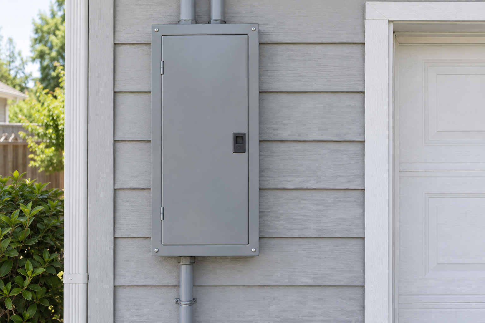

Onboarding: your home, in three steps
Steps 1 to 3 are yours. Base does 4 and 5.
Step 1
Talk me through itYour home from records
Found in City of Austin permits
Austin
...
Year built......
Electric service...
Utility
Fit notes from records
Step 2
Talk me through itWhat records miss
Your homeAustin
- Recorded
- Estimated
- To confirm
Every answer earns points
Loading home details...
Help with my electric panel
Keep doors and covers closed. If a label is visible and access feels safe, read it; otherwise choose Not sure.

Answers are saved on this device.
Step 3
Talk me through itOne photo
See a reading on a sample photo
Next
See your application
Your application, and the one thing Base needs.
Installed-node scenario
Keep the work moving.
One job. A node interruption. A visible recovery.
Illustrative state machine for this scenario, separate from your selected property.
Neighborhood compute
AvailableWorkingOffline
Illustrative local network
Member reserve protected
Protected30% simulated floor
Ready for a simulated workload.
Useful work, with visible limits.
Recoverable compute is the scenario. Hardware, network topology, capacity and member points would require a real deployment and acceptance tests.